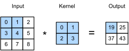
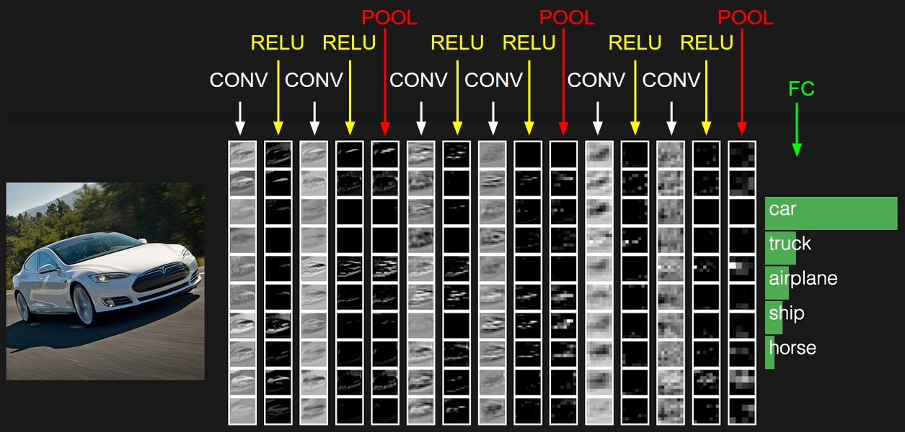
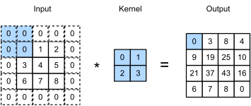
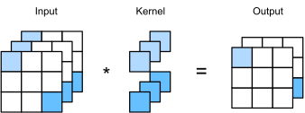
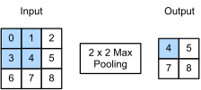

Convolutional Neural Networks for Medical Imaging
"The pixels that matter are often the ones next to each other."
August 2026 · Giacomo Saccaggi
Why Images Need Special Treatment
In Part 1, we learned how to represent discrete medical codes as dense embeddings. But what about medical images? Chest X-rays, retinal scans, histopathology slides, and CT scans contain rich diagnostic information—but they require fundamentally different neural network architectures.
Consider a 224×224 grayscale X-ray image. If we flatten it into a vector, we get 50,176 input features. A single fully connected layer with 1,000 hidden units would require 50 million parameters—just for one layer! This is computationally prohibitive and prone to overfitting.
More fundamentally, fully connected networks ignore the spatial structure of images:
- Local patterns matter: A nodule in a lung X-ray is defined by neighboring pixels, not pixels on opposite corners
- Translation invariance: A tumor is a tumor whether it's in the upper-left or lower-right of the image
- Hierarchical features: Edges combine into textures, textures into shapes, shapes into organs
Convolutional Neural Networks (CNNs) address all these issues through three key innovations: local connectivity, weight sharing, and pooling.
From Fully Connected to Locally Connected
Let's trace the evolution from fully connected networks to convolutions.
Fully Connected Networks
In a fully connected (FC) layer, every input neuron connects to every output neuron. For an image input, this means each output depends on all pixels:

Fully connected: every output depends on every input pixel
Problems with this approach:
- Too many parameters: O(input_size × output_size)
- No spatial awareness: Pixel (0,0) and pixel (223,223) are treated identically
- No translation invariance: Must learn the same pattern at every possible location
Locally Connected Networks
What if each output neuron only looks at a small local region (receptive field) of the input? This is the locally connected network:
Local Connectivity
Each output neuron connects only to a small patch of the input.
For a 5×5 receptive field on a 224×224 image:
Parameters per output neuron = 5 × 5 = 25 (instead of 50,176)
This drastically reduces parameters and captures local spatial patterns. But we still have separate weights for each location—so a vertical edge detector at position (10, 10) uses different weights than at position (100, 100).
Weight Sharing: The Convolution
The key insight: the same local pattern should be detected the same way, regardless of position. This leads to weight sharing—using the same weights (called a filter or kernel) across all spatial locations.

Convolution: the same filter slides across the entire image
This is the convolution operation—the foundation of CNNs.
| Approach | Parameters | Spatial Awareness | Translation Invariance |
|---|---|---|---|
| Fully Connected | O(H × W × outputs) | None | None |
| Locally Connected | O(F² × H × W) | Yes (local) | None |
| Convolution | O(F²) | Yes (local) | Yes |
The Convolution Operation
1D Convolution
Before tackling images, let's understand 1D convolution on a signal. Given an input sequence and a filter, convolution slides the filter across the input, computing dot products:
1D Convolution
For input signal $x$ and filter $k$ of size $F$:
The filter "slides" across the input, producing one output value at each position.
import numpy as np # 1D convolution example signal = np.array([1, 2, 3, 4, 5, 6, 7]) kernel = np.array([1, 0, -1]) # Edge detector # Manual convolution output = [] for i in range(len(signal) - len(kernel) + 1): output.append(np.sum(signal[i:i+len(kernel)] * kernel)) print(output) # [-2, -2, -2, -2, -2] - detects constant slope
2D Convolution
For images, we extend to 2D. The filter is now a small matrix (e.g., 3×3) that slides across both height and width:
2D Convolution
For input image $I$ and kernel $K$ of size $F \times F$:

2D convolution: kernel slides across height and width dimensions
import torch import torch.nn.functional as F # Create a simple 5x5 image image = torch.tensor([ [0, 0, 0, 0, 0], [0, 1, 1, 1, 0], [0, 1, 1, 1, 0], [0, 1, 1, 1, 0], [0, 0, 0, 0, 0] ], dtype=torch.float32).unsqueeze(0).unsqueeze(0) # [1, 1, 5, 5] # Horizontal edge detector kernel = torch.tensor([ [-1, -1, -1], [ 0, 0, 0], [ 1, 1, 1] ], dtype=torch.float32).unsqueeze(0).unsqueeze(0) # [1, 1, 3, 3] # Apply convolution output = F.conv2d(image, kernel) print(output.squeeze()) # tensor([[-3., -3., -3.], # [ 0., 0., 0.], # [ 3., 3., 3.]])
The output shows negative values at the top edge (dark→light transition) and positive values at the bottom edge (light→dark).
Stride and Padding
Stride
The stride controls how far the filter moves at each step. Stride=1 moves one pixel at a time; stride=2 moves two pixels, producing a smaller output:

Stride controls how much the filter moves; padding controls border handling
# Stride comparison image = torch.randn(1, 1, 8, 8) # 8x8 image kernel = torch.randn(1, 1, 3, 3) # 3x3 filter out_s1 = F.conv2d(image, kernel, stride=1) # Output: 6x6 out_s2 = F.conv2d(image, kernel, stride=2) # Output: 3x3 print(f"Stride=1: {out_s1.shape}") # torch.Size([1, 1, 6, 6]) print(f"Stride=2: {out_s2.shape}") # torch.Size([1, 1, 3, 3])
Padding
Padding adds zeros (or other values) around the input border. This allows the filter to process edge pixels and can maintain spatial dimensions:
# Padding to maintain size image = torch.randn(1, 1, 8, 8) kernel = torch.randn(1, 1, 3, 3) out_no_pad = F.conv2d(image, kernel, padding=0) # 6x6 out_pad = F.conv2d(image, kernel, padding=1) # 8x8 (same as input!) print(f"No padding: {out_no_pad.shape}") # [1, 1, 6, 6] print(f"Padding=1: {out_pad.shape}") # [1, 1, 8, 8]
Output Dimension Formula
For input size $W_{in}$, filter size $F$, padding $P$, and stride $S$:
Same formula applies to height $H_{out}$.
3D Convolution: Multiple Channels
Real images have multiple channels. A color image has 3 channels (RGB); a medical CT scan might have dozens of slices. The convolution extends naturally to handle this.

Multi-channel convolution: filter has same depth as input channels
Input Channels
For an input with $D_{in}$ channels, the filter has shape $F \times F \times D_{in}$. Each channel has its own 2D filter, and outputs are summed:
Multi-channel Convolution
One filter produces one output channel (feature map).
Multiple Filters → Multiple Feature Maps
To detect different features (edges, textures, shapes), we use multiple filters. Each filter produces one feature map, so $K$ filters produce $K$ output channels:
import torch.nn as nn # RGB image: 3 input channels # 64 filters: 64 output feature maps conv = nn.Conv2d( in_channels=3, # RGB out_channels=64, # Number of filters kernel_size=3, # 3x3 filters stride=1, padding=1 ) # Input: [batch, channels, height, width] x = torch.randn(1, 3, 224, 224) out = conv(x) print(out.shape) # torch.Size([1, 64, 224, 224])
💡 Dimensions Through a Conv Layer
- Input: $[N, D_{in}, H_{in}, W_{in}]$ — batch, channels, height, width
- Filters: $[K, D_{in}, F, F]$ — num_filters, input_channels, filter_h, filter_w
- Output: $[N, K, H_{out}, W_{out}]$ — batch, num_filters, new_height, new_width
The Complete Convolution Layer
A full convolutional layer combines several operations:
- Convolution: Apply filters to extract features
- Bias addition: Add a learnable bias to each feature map
- Activation: Apply non-linearity (typically ReLU)
Complete Conv Layer
Where $K[k,c]$ is the $c$-th channel of the $k$-th filter, and $b[k]$ is the bias for filter $k$.
import torch.nn as nn # Complete conv layer with bias and ReLU class ConvBlock(nn.Module): def __init__(self, in_channels, out_channels, kernel_size=3, padding=1): super().__init__() self.conv = nn.Conv2d(in_channels, out_channels, kernel_size, padding=padding) self.relu = nn.ReLU(inplace=True) def forward(self, x): x = self.conv(x) # Convolution + bias x = self.relu(x) # Non-linearity return x # Usage block = ConvBlock(in_channels=3, out_channels=64) x = torch.randn(1, 3, 224, 224) out = block(x) # [1, 64, 224, 224]
Parameter Count
How many learnable parameters does a conv layer have?
Number of Parameters
Where:
- $F \times F$ = filter spatial size
- $D_{in}$ = input channels
- $K$ = number of filters (output channels)
- $+K$ = one bias per filter
# Parameter count example conv = nn.Conv2d(3, 64, kernel_size=3) # Weights: 3 × 3 × 3 × 64 = 1,728 # Biases: 64 # Total: 1,792 total_params = sum(p.numel() for p in conv.parameters()) print(f"Total parameters: {total_params}") # 1792
Pooling Layers
Pooling reduces spatial dimensions while preserving important features. It provides:
- Translation invariance: Small shifts in input don't change output much
- Dimensionality reduction: Fewer parameters in subsequent layers
- Increased receptive field: Later layers "see" larger input regions

Max pooling: take the maximum value in each region
Types of Pooling
| Pooling Type | Operation | Properties |
|---|---|---|
| Max Pooling | Take maximum value in window | Preserves strongest activations; most common |
| Average Pooling | Take mean of values in window | Smoother; good for final layers |
| Sum Pooling | Sum all values in window | Preserves total activation |
import torch.nn as nn # Max pooling: 2x2 window, stride 2 → halves dimensions maxpool = nn.MaxPool2d(kernel_size=2, stride=2) x = torch.randn(1, 64, 224, 224) out = maxpool(x) print(out.shape) # torch.Size([1, 64, 112, 112]) # Average pooling avgpool = nn.AvgPool2d(kernel_size=2, stride=2) out_avg = avgpool(x) print(out_avg.shape) # torch.Size([1, 64, 112, 112])
💡 Why Max Pooling Works for Medical Imaging
In medical images, we often care about whether a feature exists, not exactly where it is. Max pooling preserves the strongest activation in each region, making the network robust to small translations. A nodule detected at position (100, 100) or (102, 98) should produce similar outputs.
CNN Architecture: AlexNet
Let's examine AlexNet (2012), the architecture that revolutionized computer vision. Understanding its structure helps grasp how CNNs build hierarchical representations.

AlexNet: 5 convolutional layers followed by 3 fully connected layers
Layer-by-Layer Breakdown
| Layer | Config | Output Size | Parameters |
|---|---|---|---|
| Input | — | 227×227×3 | — |
| Conv1 | 96 filters, 11×11, stride 4 | 55×55×96 | 34,944 |
| MaxPool1 | 3×3, stride 2 | 27×27×96 | 0 |
| Conv2 | 256 filters, 5×5, pad 2 | 27×27×256 | 614,656 |
| MaxPool2 | 3×3, stride 2 | 13×13×256 | 0 |
| Conv3 | 384 filters, 3×3, pad 1 | 13×13×384 | 885,120 |
| Conv4 | 384 filters, 3×3, pad 1 | 13×13×384 | 1,327,488 |
| Conv5 | 256 filters, 3×3, pad 1 | 13×13×256 | 884,992 |
| MaxPool3 | 3×3, stride 2 | 6×6×256 | 0 |
| FC6 | 4096 units | 4096 | 37,752,832 |
| FC7 | 4096 units | 4096 | 16,781,312 |
| FC8 | 1000 units (classes) | 1000 | 4,097,000 |
Key observation: Convolutional layers have ~3.7M parameters, while fully connected layers have ~58.6M! The FC layers dominate the parameter count.
# Simplified AlexNet-style architecture class SimpleCNN(nn.Module): def __init__(self, num_classes=1000): super().__init__() self.features = nn.Sequential( # Conv1: 3 → 96 channels, 11x11, stride 4 nn.Conv2d(3, 96, kernel_size=11, stride=4), nn.ReLU(inplace=True), nn.MaxPool2d(kernel_size=3, stride=2), # Conv2: 96 → 256 channels, 5x5 nn.Conv2d(96, 256, kernel_size=5, padding=2), nn.ReLU(inplace=True), nn.MaxPool2d(kernel_size=3, stride=2), # Conv3-5: deeper feature extraction nn.Conv2d(256, 384, kernel_size=3, padding=1), nn.ReLU(inplace=True), nn.Conv2d(384, 384, kernel_size=3, padding=1), nn.ReLU(inplace=True), nn.Conv2d(384, 256, kernel_size=3, padding=1), nn.ReLU(inplace=True), nn.MaxPool2d(kernel_size=3, stride=2), ) self.classifier = nn.Sequential( nn.Dropout(), nn.Linear(256 * 6 * 6, 4096), nn.ReLU(inplace=True), nn.Dropout(), nn.Linear(4096, 4096), nn.ReLU(inplace=True), nn.Linear(4096, num_classes), ) def forward(self, x): x = self.features(x) x = x.view(x.size(0), 256 * 6 * 6) # Flatten x = self.classifier(x) return x
Healthcare Applications of CNNs
CNNs have achieved remarkable success in medical imaging tasks, often matching or exceeding expert human performance.
Retinal Disease Detection
Gulshan et al. (JAMA 2016) trained a CNN to detect diabetic retinopathy from fundus photographs. The model achieved:
- Sensitivity: 97.5% (detecting disease when present)
- Specificity: 93.4% (correctly identifying healthy cases)
- Performance comparable to board-certified ophthalmologists

CNNs can detect diabetic retinopathy from retinal fundus images
Chest X-Ray Classification
CheXNet (Rajpurkar et al., 2017) detected pneumonia from chest X-rays, exceeding the average performance of four radiologists. This is the task we'll implement in the practical section below.
🏥 Why Medical Imaging + CNNs?
- Scalability: Automated screening can reach underserved populations
- Consistency: No fatigue, no inter-observer variability
- Speed: Process thousands of images per hour
- Augmentation: Assist (not replace) radiologists by flagging suspicious cases
Practical Implementation: Pneumonia Detection from Chest X-Rays
Let's build a complete CNN system to classify chest X-rays as Normal or Pneumonia. We'll use transfer learning with a pre-trained ResNet18 model.
Dataset Overview
Our dataset contains anterior-posterior chest X-ray images from pediatric patients (ages 1-5 years) from Guangzhou Women and Children's Medical Center:
- Normal: Healthy lung X-rays
- Pneumonia: X-rays showing pneumonia (bacterial or viral)
- Image size: Variable, resized to 224×224 for the model
# Dataset structure # chest_xray/ # ├── train/ # │ ├── NORMAL/ # │ │ ├── IM-0115-0001.jpeg # │ │ └── ... # │ └── PNEUMONIA/ # │ ├── person1_bacteria_1.jpeg # │ └── ... # ├── val/ # │ ├── NORMAL/ # │ └── PNEUMONIA/ # └── test/ # ├── NORMAL/ # └── PNEUMONIA/
Data Loading and Transforms
We use torchvision transforms to preprocess images: resize to 224×224, convert to tensor, and normalize using ImageNet statistics (since we'll use a pre-trained model).
import os import torch import torch.nn as nn import torch.optim as optim from torch.utils.data import DataLoader from torchvision import datasets, transforms, models import numpy as np from PIL import Image # Define transforms train_transforms = transforms.Compose([ transforms.Resize((224, 224)), transforms.RandomHorizontalFlip(), # Data augmentation transforms.RandomRotation(10), # Slight rotation transforms.ToTensor(), transforms.Normalize( mean=[0.485, 0.456, 0.406], # ImageNet mean std=[0.229, 0.224, 0.225] # ImageNet std ) ]) val_transforms = transforms.Compose([ transforms.Resize((224, 224)), transforms.ToTensor(), transforms.Normalize( mean=[0.485, 0.456, 0.406], std=[0.229, 0.224, 0.225] ) ]) # Load datasets data_dir = "chest_xray" train_dataset = datasets.ImageFolder( root=os.path.join(data_dir, "train"), transform=train_transforms ) val_dataset = datasets.ImageFolder( root=os.path.join(data_dir, "val"), transform=val_transforms ) test_dataset = datasets.ImageFolder( root=os.path.join(data_dir, "test"), transform=val_transforms ) # Create data loaders train_loader = DataLoader(train_dataset, batch_size=32, shuffle=True, num_workers=4) val_loader = DataLoader(val_dataset, batch_size=32, shuffle=False, num_workers=4) test_loader = DataLoader(test_dataset, batch_size=32, shuffle=False, num_workers=4) print(f"Training samples: {len(train_dataset)}") print(f"Validation samples: {len(val_dataset)}") print(f"Test samples: {len(test_dataset)}") print(f"Classes: {train_dataset.classes}")
# Output: # Training samples: 5216 # Validation samples: 16 # Test samples: 624 # Classes: ['NORMAL', 'PNEUMONIA']
Transfer Learning with ResNet18
Transfer learning leverages features learned from large datasets (ImageNet with 1.2M images) and adapts them to our smaller medical dataset. We:
- Load a pre-trained ResNet18 model
- Replace the final fully connected layer for binary classification
- Optionally freeze early layers (feature extraction) and only train later layers
import torchvision.models as models def create_model(num_classes=2, pretrained=True, freeze_features=False): """Create ResNet18 model for transfer learning. Args: num_classes: Number of output classes (2 for Normal/Pneumonia) pretrained: Use ImageNet pre-trained weights freeze_features: If True, freeze convolutional layers """ # Load pre-trained ResNet18 model = models.resnet18(pretrained=pretrained) # Optionally freeze feature extraction layers if freeze_features: for param in model.parameters(): param.requires_grad = False # Replace final FC layer # Original: Linear(512, 1000) for ImageNet # New: Linear(512, 2) for binary classification num_features = model.fc.in_features model.fc = nn.Linear(num_features, num_classes) return model # Create model model = create_model(num_classes=2, pretrained=True, freeze_features=False) # Count parameters total_params = sum(p.numel() for p in model.parameters()) trainable_params = sum(p.numel() for p in model.parameters() if p.requires_grad) print(f"Total parameters: {total_params:,}") print(f"Trainable parameters: {trainable_params:,}")
# Output: # Total parameters: 11,177,538 # Trainable parameters: 11,177,538
💡 Why Transfer Learning Works
Early CNN layers learn generic features (edges, textures, shapes) that transfer well across domains. A vertical edge detector learned on cats works equally well on X-rays. By reusing these features, we need fewer labeled medical images to achieve good performance.
Training Loop
def train_model(model, train_loader, val_loader, num_epochs=10, lr=0.001): """Train the CNN model.""" device = torch.device("cuda" if torch.cuda.is_available() else "cpu") print(f"Training on: {device}") model = model.to(device) # Loss function and optimizer criterion = nn.CrossEntropyLoss() optimizer = optim.Adam(model.parameters(), lr=lr) scheduler = optim.lr_scheduler.StepLR(optimizer, step_size=5, gamma=0.1) # Training history history = {'train_loss': [], 'train_acc': [], 'val_loss': [], 'val_acc': []} best_val_acc = 0.0 for epoch in range(num_epochs): # ============ Training Phase ============ model.train() running_loss = 0.0 correct = 0 total = 0 for inputs, labels in train_loader: inputs, labels = inputs.to(device), labels.to(device) optimizer.zero_grad() outputs = model(inputs) loss = criterion(outputs, labels) loss.backward() optimizer.step() running_loss += loss.item() * inputs.size(0) _, predicted = outputs.max(1) total += labels.size(0) correct += predicted.eq(labels).sum().item() train_loss = running_loss / total train_acc = correct / total # ============ Validation Phase ============ model.eval() running_loss = 0.0 correct = 0 total = 0 with torch.no_grad(): for inputs, labels in val_loader: inputs, labels = inputs.to(device), labels.to(device) outputs = model(inputs) loss = criterion(outputs, labels) running_loss += loss.item() * inputs.size(0) _, predicted = outputs.max(1) total += labels.size(0) correct += predicted.eq(labels).sum().item() val_loss = running_loss / total val_acc = correct / total # Update learning rate scheduler.step() # Save history history['train_loss'].append(train_loss) history['train_acc'].append(train_acc) history['val_loss'].append(val_loss) history['val_acc'].append(val_acc) # Save best model if val_acc > best_val_acc: best_val_acc = val_acc torch.save(model.state_dict(), "best_model.pt") print(f"Epoch {epoch+1:2d}/{num_epochs} | " f"Train Loss: {train_loss:.4f} Acc: {train_acc:.4f} | " f"Val Loss: {val_loss:.4f} Acc: {val_acc:.4f}") return history # Train the model history = train_model(model, train_loader, val_loader, num_epochs=10, lr=0.001)
# Sample output: # Training on: cuda # Epoch 1/10 | Train Loss: 0.3842 Acc: 0.8456 | Val Loss: 0.2134 Acc: 0.9375 # Epoch 2/10 | Train Loss: 0.1823 Acc: 0.9312 | Val Loss: 0.1567 Acc: 0.9375 # Epoch 3/10 | Train Loss: 0.1345 Acc: 0.9501 | Val Loss: 0.1234 Acc: 0.9688 # Epoch 4/10 | Train Loss: 0.1012 Acc: 0.9623 | Val Loss: 0.0987 Acc: 0.9688 # Epoch 5/10 | Train Loss: 0.0823 Acc: 0.9712 | Val Loss: 0.0856 Acc: 1.0000 # Epoch 6/10 | Train Loss: 0.0534 Acc: 0.9801 | Val Loss: 0.0734 Acc: 1.0000 # Epoch 7/10 | Train Loss: 0.0412 Acc: 0.9856 | Val Loss: 0.0698 Acc: 1.0000 # Epoch 8/10 | Train Loss: 0.0345 Acc: 0.9878 | Val Loss: 0.0654 Acc: 1.0000 # Epoch 9/10 | Train Loss: 0.0289 Acc: 0.9901 | Val Loss: 0.0623 Acc: 1.0000 # Epoch 10/10 | Train Loss: 0.0256 Acc: 0.9912 | Val Loss: 0.0612 Acc: 1.0000
Model Evaluation
For medical diagnosis, accuracy alone is insufficient. We need metrics that capture the clinical implications of errors.
Evaluation Metrics
from sklearn.metrics import ( accuracy_score, precision_score, recall_score, f1_score, roc_auc_score, confusion_matrix, classification_report ) def evaluate_model(model, test_loader, device): """Comprehensive model evaluation.""" model.eval() all_preds = [] all_labels = [] all_probs = [] with torch.no_grad(): for inputs, labels in test_loader: inputs = inputs.to(device) outputs = model(inputs) probs = torch.softmax(outputs, dim=1) _, preds = outputs.max(1) all_preds.extend(preds.cpu().numpy()) all_labels.extend(labels.numpy()) all_probs.extend(probs[:, 1].cpu().numpy()) # P(Pneumonia) all_preds = np.array(all_preds) all_labels = np.array(all_labels) all_probs = np.array(all_probs) # Calculate metrics accuracy = accuracy_score(all_labels, all_preds) precision = precision_score(all_labels, all_preds) recall = recall_score(all_labels, all_preds) f1 = f1_score(all_labels, all_preds) auroc = roc_auc_score(all_labels, all_probs) print("=" * 50) print("MODEL EVALUATION RESULTS") print("=" * 50) print(f"Accuracy: {accuracy:.4f}") print(f"Precision: {precision:.4f}") print(f"Recall: {recall:.4f}") print(f"F1 Score: {f1:.4f}") print(f"AUROC: {auroc:.4f}") print("=" * 50) # Confusion matrix cm = confusion_matrix(all_labels, all_preds) print("\nConfusion Matrix:") print(" Predicted") print(" Normal Pneumonia") print(f"Actual Normal {cm[0,0]:4d} {cm[0,1]:4d}") print(f" Pneumonia {cm[1,0]:4d} {cm[1,1]:4d}") return { 'accuracy': accuracy, 'precision': precision, 'recall': recall, 'f1': f1, 'auroc': auroc, 'confusion_matrix': cm, 'predictions': all_preds, 'probabilities': all_probs } # Load best model and evaluate device = torch.device("cuda" if torch.cuda.is_available() else "cpu") model.load_state_dict(torch.load("best_model.pt")) model = model.to(device) results = evaluate_model(model, test_loader, device)
# Sample output: # ================================================== # MODEL EVALUATION RESULTS # ================================================== # Accuracy: 0.9263 # Precision: 0.9156 # Recall: 0.9744 # F1 Score: 0.9441 # AUROC: 0.9654 # ================================================== # # Confusion Matrix: # Predicted # Normal Pneumonia # Actual Normal 198 36 # Pneumonia 10 380
⚠️ Clinical Interpretation
False Negatives (FN = 10): Pneumonia cases missed by the model. In clinical practice, these are dangerous—patients with pneumonia go untreated.
False Positives (FP = 36): Normal cases flagged as pneumonia. These lead to unnecessary follow-up but are less dangerous than FN.
For screening applications, high recall (sensitivity) is prioritized to minimize missed diagnoses.
Visualizing Predictions
import matplotlib.pyplot as plt def visualize_predictions(model, test_dataset, device, num_images=8): """Visualize model predictions on sample images.""" model.eval() # Get random samples indices = np.random.choice(len(test_dataset), num_images, replace=False) fig, axes = plt.subplots(2, 4, figsize=(16, 8)) axes = axes.flatten() class_names = ['Normal', 'Pneumonia'] for idx, ax in zip(indices, axes): image, label = test_dataset[idx] # Get prediction with torch.no_grad(): output = model(image.unsqueeze(0).to(device)) prob = torch.softmax(output, dim=1) pred = output.argmax(1).item() confidence = prob[0, pred].item() # Denormalize image for display img_display = image.permute(1, 2, 0).numpy() img_display = img_display * np.array([0.229, 0.224, 0.225]) + np.array([0.485, 0.456, 0.406]) img_display = np.clip(img_display, 0, 1) # Plot ax.imshow(img_display) # Color based on correct/incorrect color = 'green' if pred == label else 'red' ax.set_title( f"True: {class_names[label]}\nPred: {class_names[pred]} ({confidence:.2f})", color=color, fontsize=10 ) ax.axis('off') plt.tight_layout() plt.savefig("predictions.png", dpi=150) plt.show() visualize_predictions(model, test_dataset, device)
ROC Curve
from sklearn.metrics import roc_curve, auc def plot_roc_curve(labels, probabilities): """Plot ROC curve.""" fpr, tpr, thresholds = roc_curve(labels, probabilities) roc_auc = auc(fpr, tpr) plt.figure(figsize=(8, 6)) plt.plot(fpr, tpr, color='#4a90d9', lw=2, label=f'ROC curve (AUC = {roc_auc:.3f})') plt.plot([0, 1], [0, 1], color='gray', lw=1, linestyle='--', label='Random') plt.xlim([0.0, 1.0]) plt.ylim([0.0, 1.05]) plt.xlabel('False Positive Rate', fontsize=12) plt.ylabel('True Positive Rate', fontsize=12) plt.title('Receiver Operating Characteristic', fontsize=14) plt.legend(loc='lower right') plt.grid(True, alpha=0.3) plt.savefig("roc_curve.png", dpi=150) plt.show() # Get predictions from evaluation test_labels = [] for _, label in test_loader: test_labels.extend(label.numpy()) plot_roc_curve(test_labels, results['probabilities'])
Results Summary
| Metric | Value | Clinical Interpretation |
|---|---|---|
| Accuracy | 92.6% | Overall correct classifications |
| Precision | 91.6% | Of predicted pneumonia, 91.6% truly have it |
| Recall (Sensitivity) | 97.4% | Of actual pneumonia, 97.4% detected |
| Specificity | 84.6% | Of normal cases, 84.6% correctly identified |
| F1 Score | 94.4% | Harmonic mean of precision and recall |
| AUROC | 96.5% | Discriminative ability across thresholds |
The model achieves 97.4% recall—critical for a screening tool where missing pneumonia cases is costly. The trade-off is lower specificity (84.6%), meaning some healthy patients are flagged for follow-up.
Summary
We covered the theory and practice of CNNs for medical imaging:
| Concept | Key Idea | Benefit |
|---|---|---|
| Local Connectivity | Each neuron sees only a local region | Captures spatial patterns, fewer parameters |
| Weight Sharing | Same filter applied everywhere | Translation invariance, massive parameter reduction |
| Convolution | Sliding dot product with learnable kernel | Learns feature detectors automatically |
| Pooling | Downsample by taking max/avg | Reduces dimensions, adds robustness |
| Transfer Learning | Reuse features from ImageNet | Works well with limited medical data |
| ResNet | Residual connections enable deep networks | State-of-the-art feature extraction |
Key Formulas
Output size:
Parameters:
2D Convolution:
🔬 What's Next?
In Part 3, we'll explore Recurrent Neural Networks (RNNs) for sequential medical data: time series of vital signs, sequences of clinical events, and longitudinal patient trajectories.
References
- LeCun et al. (1998). "Gradient-based learning applied to document recognition" — Foundational CNN paper
- Krizhevsky et al. (2012). "ImageNet Classification with Deep Convolutional Neural Networks" — AlexNet
- He et al. (2016). "Deep Residual Learning for Image Recognition" — ResNet
- Gulshan et al. (2016). "Development and Validation of a Deep Learning Algorithm for Detection of Diabetic Retinopathy" — JAMA
- Rajpurkar et al. (2017). "CheXNet: Radiologist-Level Pneumonia Detection on Chest X-Rays with Deep Learning"
- Kermany et al. (2018). "Identifying Medical Diagnoses and Treatable Diseases by Image-Based Deep Learning" — Chest X-ray dataset